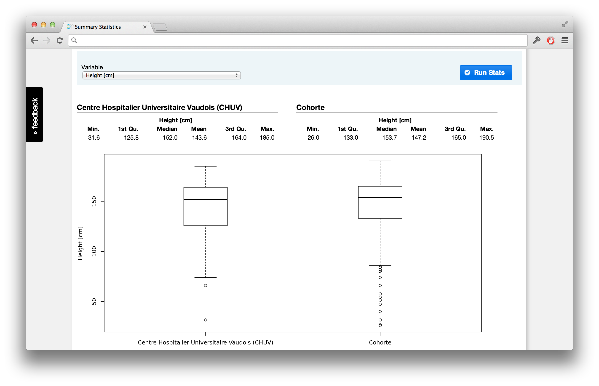
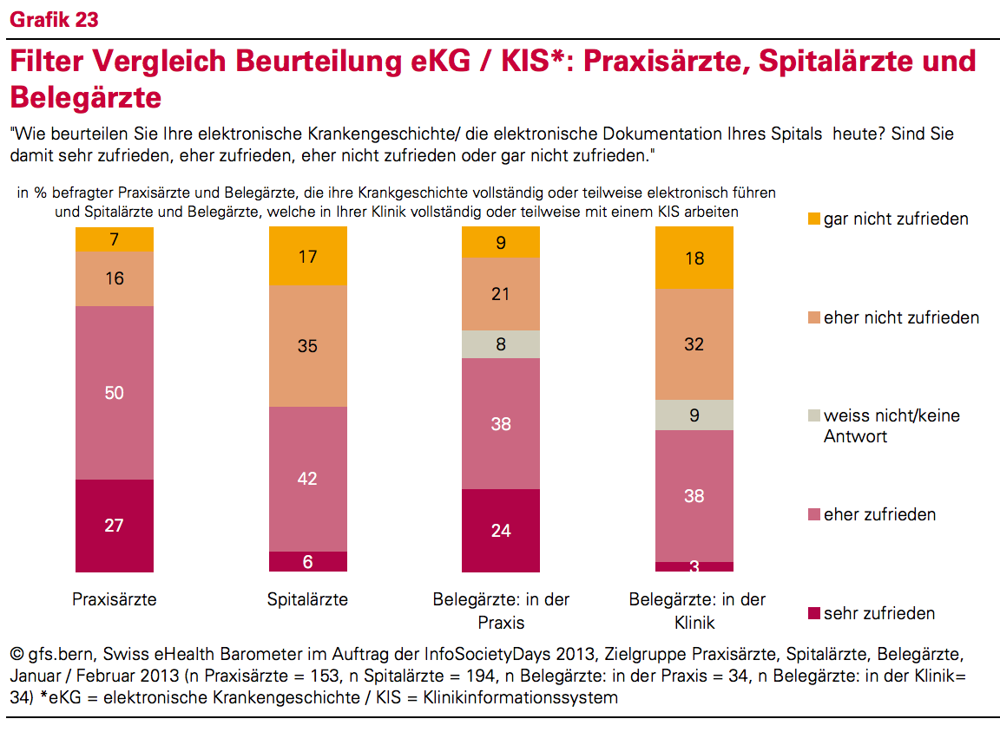
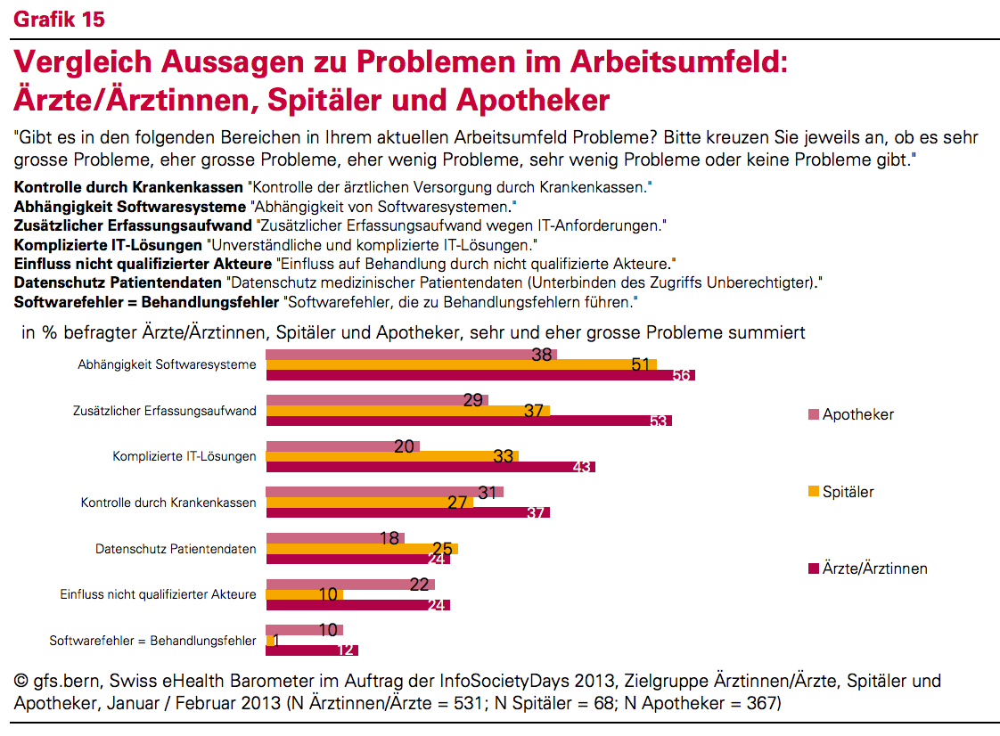

Blog
Data-Driven Analysis in der Rheumaforschung
Dr. Daniel Stekhoven berichtet im SCQM Jahresbericht über einen datengetrieben Ansatz in der Datenanalyse. Mittels Clustering können Muster für die Klassifikation von PsA Patienten identifiziert werden.
Eine kurze Beschreibung des Ansatzes findet sich im SCQM Jahresbericht [PDF, S. 15]: http://www.scqm.ch/uber-scqm/annual-reports/annual-report-2013

Clinical Data Management in OCQMS
Data Entry
Data is entered at the contributing hospitals by study nurses and medical docters. The data entry forms have a clear structure that makes them easy to use for all users.
Data Validation
Data validation happens during data entry with validation rules on the online forms. Addition verification steps for the data can take place at the hospital level by requiring a user with a special role (signer) to sign and close a data entry (visit).
Data Cleaning / Discrepancy Management
For data that does not pass post-signing validation rules a request for clarification can be issued by the study monitor. The responsible user at the hospital level will be notified about this request. The whole communication on the request for clarification is tracked in the database.
Data Extraction / Research
Data of finalized visits are ready for download as CSV files. All data of the registry is mirrored to a separate export format (research database). During the transfer process data transformations take place to bring the data into a tabular structure and to anonymize personal subject data. To ensure full reproducability of data queries we create periodic snapshots of the research database. A snapshot is a complete immutable set of CSV files with a consistent naming convention (YYYY-MM-DD: e.g. 2014-01-01).
We support the Hacker Pledge
As a company, we pledge to support:
1. Initiative & curiosity
We expect hackers to be creative, contribute product ideas, and challenge the status quo. We encourage them to read tech news, explore new software, and attend a few events a year on work time to keep their skills up-to-date.
2. High-productivity working conditions
We let hackers choose the best tools available, both software and hardware. To avoid interrupts and foster high-quality work, we provide an environment as calm and stress-free as possible.
3. Openness & freedom of speech
We encourage our staff to share ideas and knowledge about technology through meetups and exchanges with other hackers, while respecting the company's expectations for confidentiality.
4. Giving back to the community
Given how essential Free Software is to a hacker's work, we strive to give back by contributing upstream, open-sourcing internal projects, and sponsoring conferences or community organizations.
Text by @hackerpledge www.hackerpledge.org
Realtime Benchmarking for Medical Data
OCQMS now offers some basic summary statistics for realtime explorative data analysis. Below you see a boxplot chart for a certain institution in comparison to all cohort data. The charts can also help to discover outliers and correct erroneous values if needed.
The summary statistics are implemented using the open source statistical programming language R (www.r-project.org).

Warum Ärzte von Klinikinformationssystemen (KIS) enttäuscht sind
Mehr als die Hälfte der Schweizer Spitalärzte sind unzufrieden mit dem Klinikinformationssystem (KIS) ihres Spitals. Der Swiss eHealth Barometer 2013 zeigt für die KIS-Lösungen ein sehr durchzogenes Bild [http://www.gfsbern.ch/Neuigkeiten/tabid/177/itemid/827/amid/1151/swiss- ehealth-barometer-2013.aspx].

Ein KIS ist ein IT-Tool, welches für seine Nutzer direkten Nutzen stiften soll: das System soll den Arzt bei der Behandlung seiner Patienten unterstützen. Statt der eigentlichen Verlaufsdokumentation dominieren heute aber Administrativlösungen. Die Ärzte nehmen solche Tools nicht als Arbeitsunterstützung wahr, sondern sehen sich im Gegenteil mit zusätzlichem Erfassungsaufwand konfrontiert.

Die KIS-Lösungen scheinen mehr durch administrative Abläufe als durch die ärztliche Bedürfnisse getrieben. Ändern lässt sich dies, indem sich die Ärzte aktiver in die Entwicklung von IT-Applikationen einbringen. Nur so können IT- Systeme entwickelt werden, welche die Ärzte in der Behandlung ihrer Patienten unterstützen und einen echten medizinischen Mehrwert schaffen: “technology should serve doctors, rather than doctors serving technology”. [http://www.theatlantic.com/health/archive/2014/03/doctors-and-tech-who-serves-whom/284518/]
OCQMS - Klinische Dokumentation für Ärzte: www.healthdata.ai